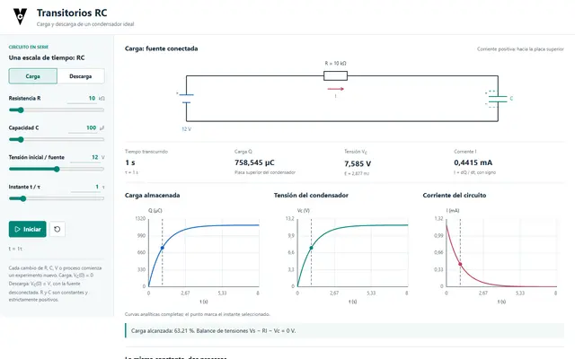
Nueva simulación
Carga y descarga RC
Constante de tiempo, corriente, tensión y energía del condensador.
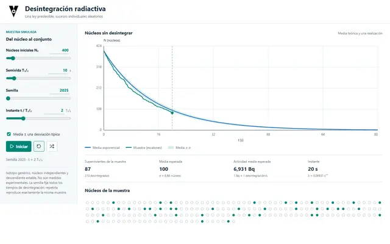
Nueva simulación
Desintegración radiactiva
Semivida, azar y comparación con la ley exponencial.
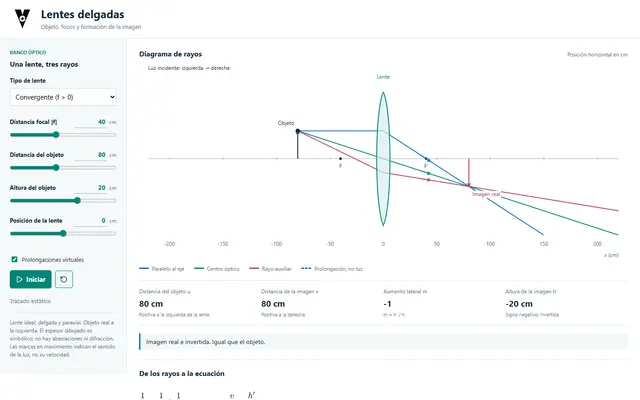
Nueva simulación
Lentes delgadas
Lentes convergentes y divergentes, imágenes reales y virtuales y rayos principales.
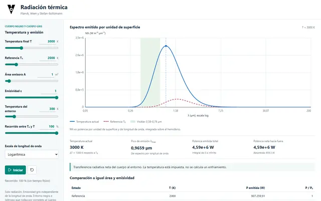
Nueva simulación
Radiación térmica
Espectro de Planck, ley de Wien y Stefan–Boltzmann.
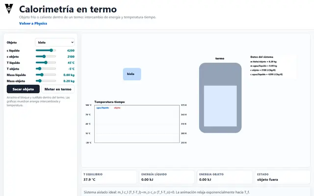
Física
Calorimetría en termo
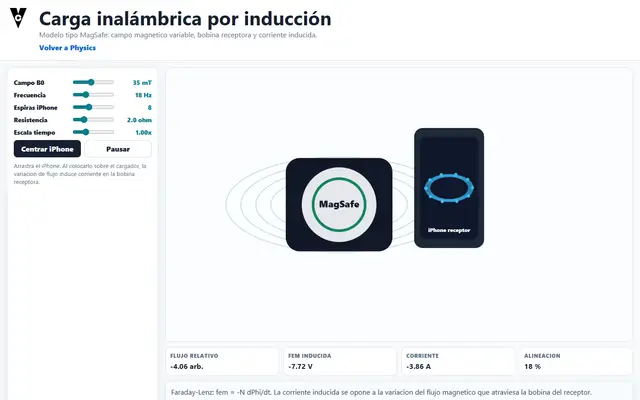
Física
Carga inalámbrica por inducción
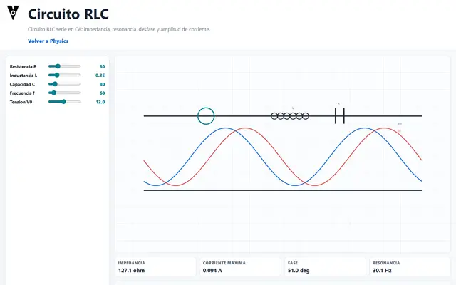
Física
Circuito RLC
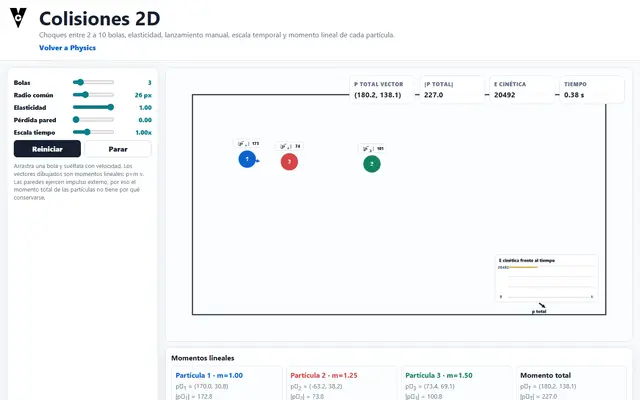
Física
Colisiones 2D
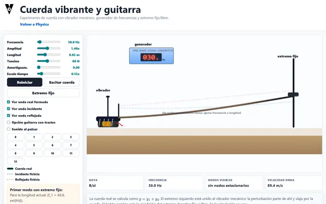
Física
Cuerda vibrante y guitarra
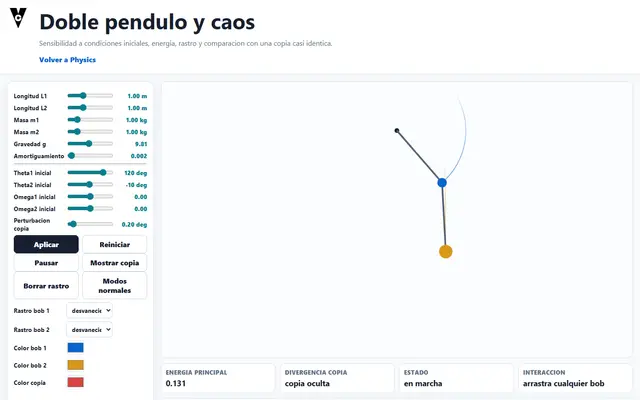
Física
Doble pendulo y caos
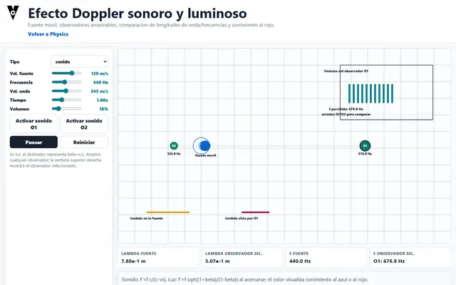
Física
Efecto Doppler sonoro y luminoso
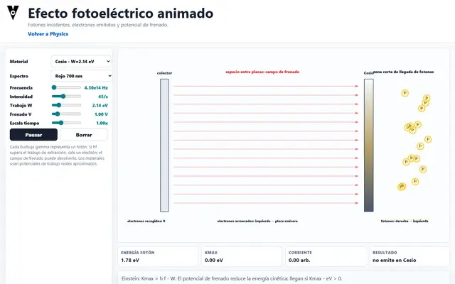
Física
Efecto fotoeléctrico animado
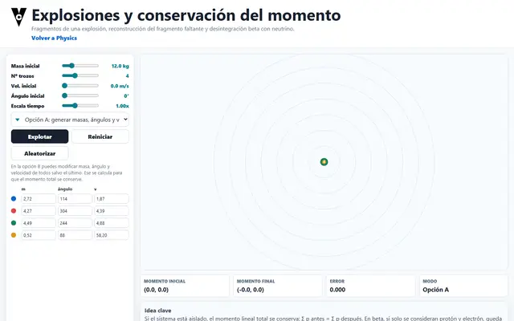
Física
Explosiones y momento lineal

Física
Fluidos y Bernoulli
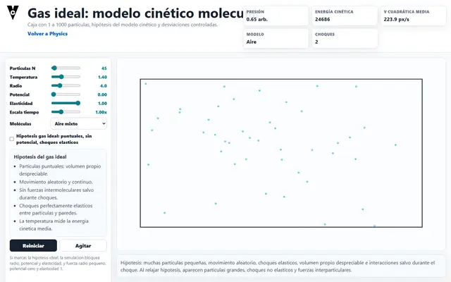
Física
Gas ideal: modelo cinético molecular
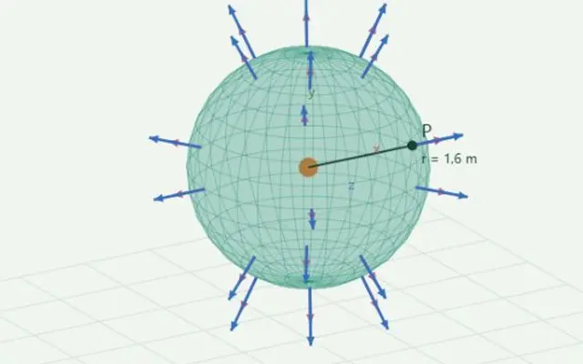
Física
Gauss eléctrico
Distribuciones de carga, campo y flujo a través de superficies gaussianas.
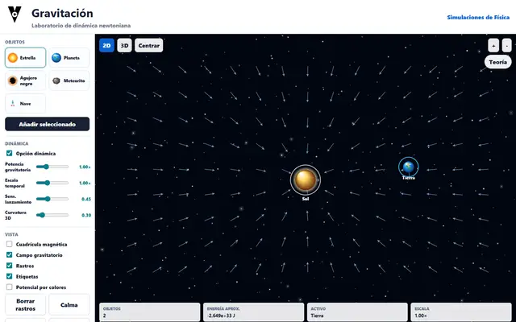
Física
Gravitación
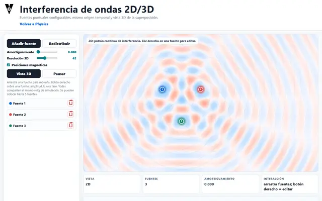
Física
Interferencia de ondas 2D/3D
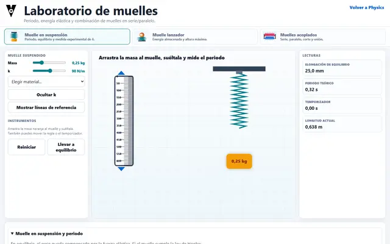
Física
Laboratorio de muelles
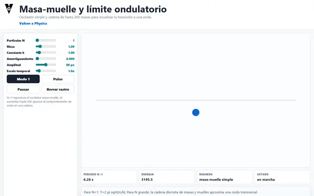
Física
Masa-muelle y límite ondulatorio
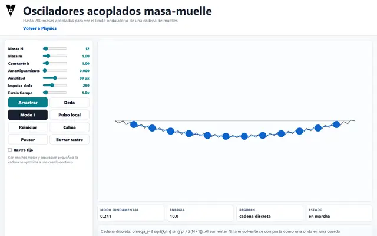
Física
Osciladores acoplados masa-muelle
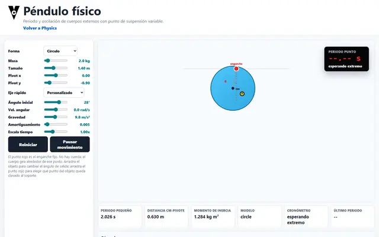
Física
Péndulo físico
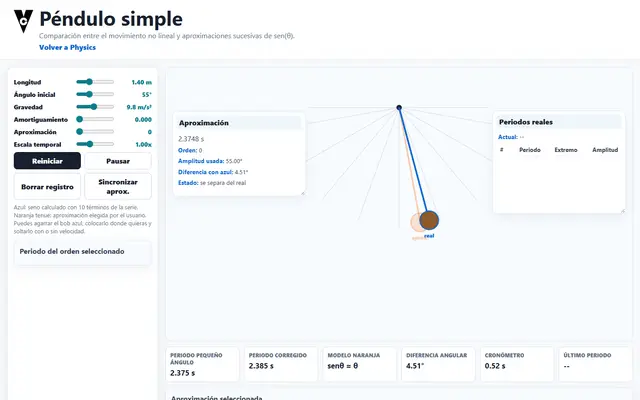
Física
Péndulo simple
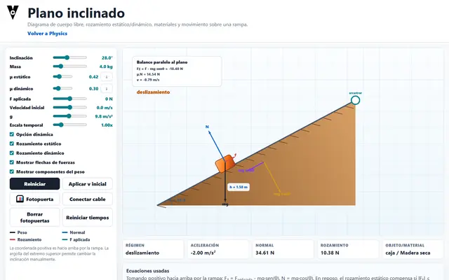
Física
Plano inclinado
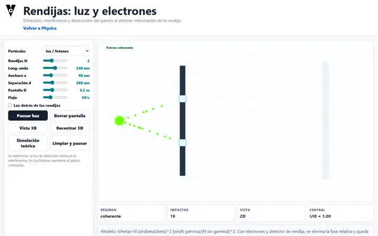
Física
Rendijas: luz y electrones
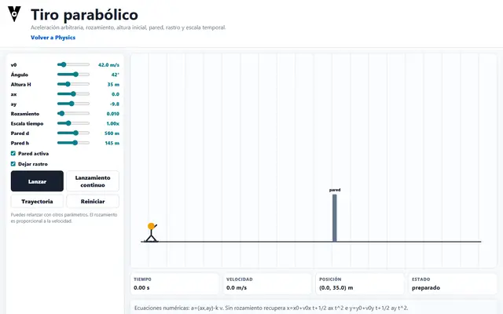
Física
Tiro parabólico
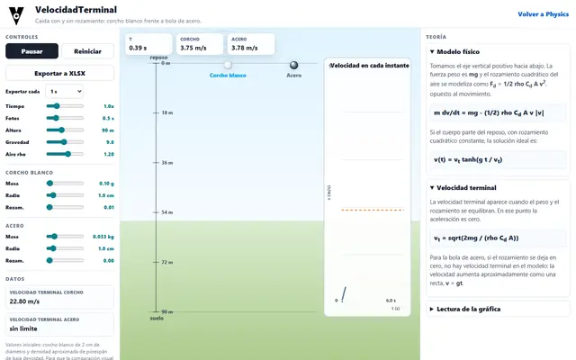
Física
VelocidadTerminal
No hay resultados para esa búsqueda.